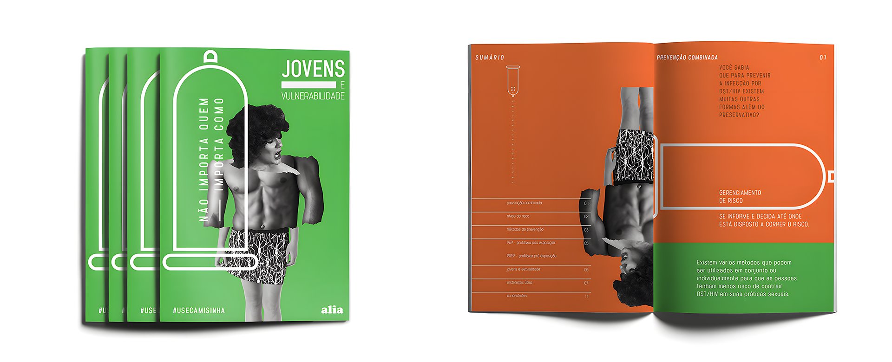
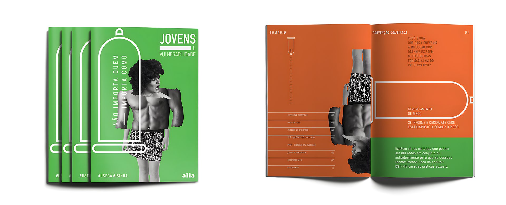
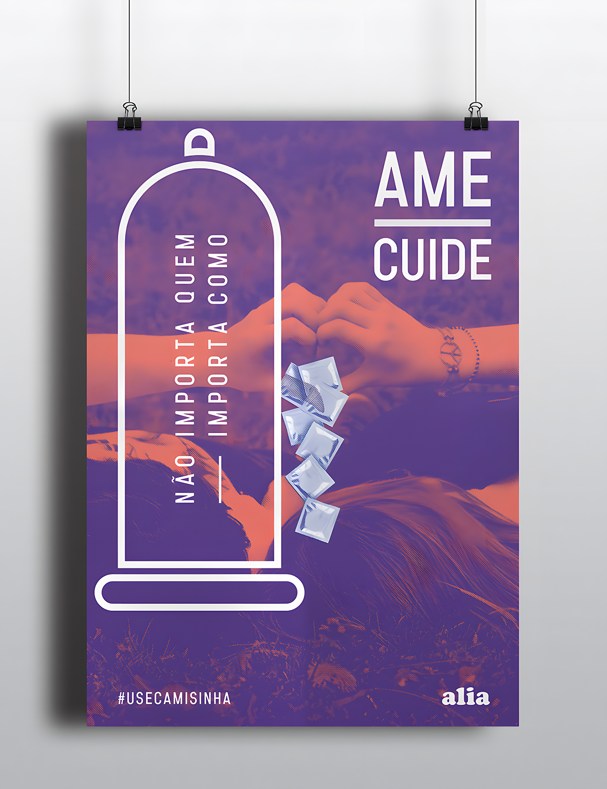
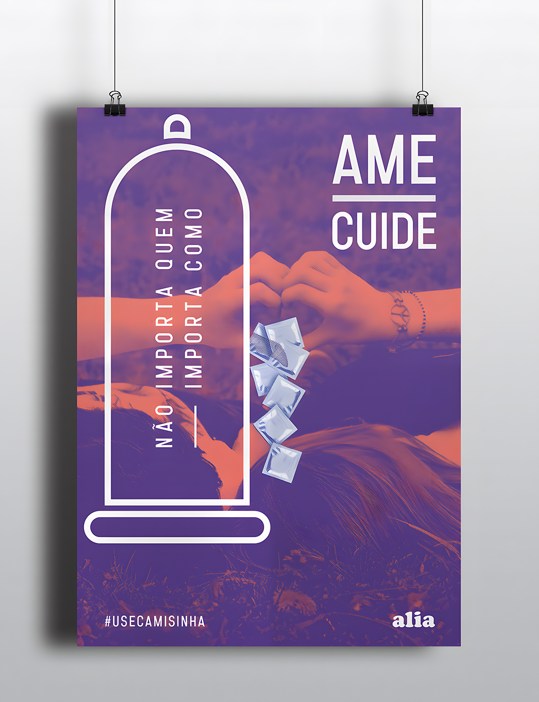

 


Launching a vital communication campaign for Associação Londrinense Interdisciplinar de Aids - ALIA, this initiative addresses the pressing issue of the rising HIV infection rates in Brazil. The campaign is dedicated to reigniting the conversation about HIV/AIDS, a topic that once dominated public discourse in the 1980s and 1990s but has since faded from the collective memory of today's youth. By leveraging informative and educational strategies, the aim is to enlighten and engage society, fostering a renewed awareness of this ongoing health challenge. The goal is to dismantle myths, spread critical information, and foster a supportive environment for those affected, ultimately contributing to a more informed and empathetic society.